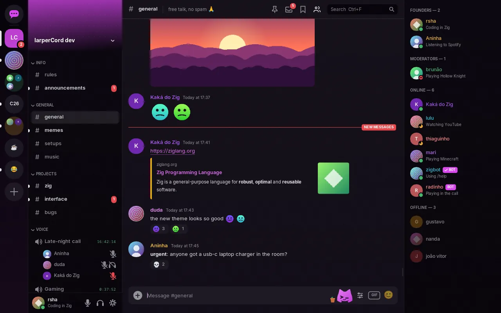

Discord,without the browserinside.
A native client that sits around 130 MB of RAM with a real account and 0% CPU when idle. Its entire interface is one text file you can edit while it runs. Watch it rearrange.
Read this first: third-party clients break Discord's Terms of Service and your account can be banned, so use a secondary account. Demo mode needs no account at all.
And this is the real thing. Same data, same binary:

- RAM, real account
- ~130 MB
- idle CPU
- 0%
- themes
- 11
- electron
- 0
1,279 MB to say good morning.
An Electron client is a whole browser dressed up as an app. One square is 5 MB of RAM.
| Vesktop (Electron) | Discord Phoenix (Rust) | larperCord | |
|---|---|---|---|
| RAM (PSS) | 1,279 MB | ~290 MB | ~130 MB with a real account |
| CPU when idle | 12–47% | 0.1% | 0–0.4% |
| Binary on disk | 287 MB | not released | ~14 MB |
larperCord: 125–140 MB in one account's normal use and about 70 MB right after opening. Yours depends on your servers, members and images. Idle CPU was measured across all 11 themes with GIF autoplay off, and an animated GIF on screen costs about 2.5%. About 35 MB of the PSS is the NVIDIA driver, libraries and fonts. Vesktop: average since launch, measured with ps. Both on the same PC: Arch Linux, Hyprland, i5-2400S, GTX 1050 Ti, 1280×800. Discord Phoenix: not measured by us and not a side-by-side test. It's an early Windows 11 build, from a Task Manager screenshot posted by Discord's CTO. How this was measured →
The interface is a file. Go on, break it.
These are the real layouts from themes/*.kdl. Change a width, move a node, rename a component. In the app, saving the file reloads the window right away (inotify on Linux, folder change notifications on Windows). An error points to file:line:column and the previous theme stays on screen.
Full theme language reference →
}Eleven themes. Not eleven color schemes.
Same binary, same data, different file. Components move, change shape and swap variants. Move your pointer across a screenshot to see light mode. Click one to dress this whole page in its colors (or press F2, like in the app).
Make your own in the theme builder →
}It speaks the real gateway. It's a real client.
Split view
Up to three conversations side by side, each with its own history and scroll position. The composer follows the focused pane.

The call screen
Click a voice channel and the call takes the chat area: one tile per person, in the theme's colors and card style, with a green ring while they talk and a LIVE badge when they stream. The mixer gives each person a volume, plus Remove noise and Even out volume.

Threads and forums
Threads nest under their channel and open like any conversation, with tabs, drafts and search. Forums show their posts instead of a chat, with tags and “New Post”.

Emoji and autocomplete
Custom emoji and stickers show as images, animated too. The picker has the full Unicode list and your servers' emoji. In the text box,
@,#,:aband/open a list.
Read state, in sync
Unreads and mentions match Discord when you open the app, and reading on another device clears them here. Channels open at the first unread. Pins live behind the pin icon, and Discord links open in the app.

Inbox
Ctrl+I: unread DMs and mentions from every server, by channel, with previews and “mark all as read”.

Offline search
Ctrl+F searches memory and the local cache on every keystroke, no internet needed. Filters:
from:,in:,has:link,has:image,has:file.
Command palette
Ctrl+K: fuzzy search for channels, DMs, servers, themes, status and every toggle. This page has one too. Try it.

Video in the chat
Attachments and direct links play in place through FFmpeg, loaded only on the first play: your distro's on Linux, or the Download FFmpeg button in Settings → Chat on Windows. Up to 480p and about 30 fps. Without FFmpeg, the video opens in your browser.

Code that reads like code
Discord markdown, parsed once when the message arrives. Code blocks get highlighting in your theme's colors and a copy button, and a live preview sits above the composer.

Full profiles
Banner, bio, activity, mutual friends and servers, connections, roles and a private note. In a server, people show the nickname, picture, bio and banner they set for it.

Saved messages, with notes
Ctrl+Shift+S: bookmarks that live only on your computer. Nothing goes to Discord.

Alerts and filters
Alert words count as mentions, a word filter collapses messages, “ignore” hides someone without blocking them, and focus mode quiets everything but DMs and mentions. All local.

A mascot with a life of its own
Terminal plays an opening while the app connects, then sits on your message box: it follows the mouse, reacts to what you write, can be grabbed and thrown, and drinks coffee or goes for a walk when you leave it alone. It only moves while the window is focused, and one switch turns it off. The mascot →

And the rest
Replies, edits, reactions, right-click menus everywhere, multi-message text selection, images and GIFs, calls in DMs and groups, call timers on voice channels, bot buttons and slash commands, polls, moderation, server folders, channel tabs, multiple accounts, drafts per channel, proxy and Tor support, English, Portuguese, Japanese and Russian, Arabic and Hebrew (typed too), shortcuts you can change, optional vim keys. Full tour →

What larperCord has that the official app doesn't →
}Real calls. Encrypted end to end.
aead_xchacha20_poly1305_rtpsize
- A mixer with one volume per person. Each person is their own audio stream on the same output device. Remove noise runs RNNoise on one person's sound, and Even out volume brings a quiet or loud voice toward the others. Both stay off until you turn them on for someone.
- A call screen in the theme's style. One tile per person, with the picture and nickname they use in that server, what they're playing and who's streaming. Alone in a call, the mascot naps next to an invite button.
- No call, no cost. The voice thread is only created when you join. Before that, audio only starts if you open the voice settings.
- Your mic, your rules. Pick your devices, even mid-call. Voice activity with an automatic threshold or push-to-talk, a high-pass filter, a noise gate and RNNoise noise suppression, a live meter and a mic test.
- Honest limits. On Linux, push-to-talk only works while the window is focused (on Windows it works from any window). No screen sharing or camera. Voice guide →
Lua, in a cage.
Drop a .lua file in your plugins folder (~/.config/larpercord/plugins/ on Linux, %APPDATA%\larpercord\plugins\ on Windows) to add panels, right-click entries, notes under messages, commands and keybinds, without recompiling anything. Scam guard, CVE radar, GitHub cards, what did I miss, translate, reminders, highlights, clean links, and links and files come with the app.
-- @name CVE notes
-- @capabilities messages, decorate, http
-- @hosts cveawg.mitre.org
larper.on("message", function(msg)
local id = msg.content:upper():match("CVE%-%d+%-%d+")
if not id then return end
larper.http.get("https://cveawg.mitre.org/api/cve/" .. id, function(res)
local cve = res.ok and larper.json.decode(res.body)
local cna = cve and cve.containers and cve.containers.cna
if cna and cna.title then
larper.decorate(msg.id, { note = id .. ": " .. cna.title })
end
end)
end, { contains = { "cve-" } })- On a thread of their own. A slow plugin can't make the interface stutter. With no plugin on, the thread doesn't even exist.
- No files, no processes, no sockets.
io,os.execute,require,loadanddebugsimply don't exist. The only network is HTTPS to hosts you approve one by one, without your token or cookies. - About 5 million instructions per call. A
while true do endgets stopped and doesn't freeze the app.pcallcan't catch that. - 8 MB per plugin. Each one runs in its own Lua state. After 10 errors, it's stopped.
larper.sendonly works from your own gesture. Automatic replies would make your account a self-bot, so they're blocked by design. Plugin API →

Demo data, but the CVE and GitHub notes are real answers from those services. Nothing goes out until you approve the host on the plugin's card. What each one asks for → · Start your own →
- Scam guard. Free Nitro links,
dlscord-nitro.ru, addresses in another alphabet, a link that shows one site and opens another: marked in red. It runs on your computer, with no network. - CVE radar. Someone writes
CVE-2021-44228, and the severity, the CVSS score and a summary appear under the message, from the official record. - GitHub cards.
owner/repo#123and GitHub links get the title, the state and the stars. A renamed repository shows its current name. - What did I miss.
/missedsums up the unread messages: who talked, who called you, which questions nobody answered, links and files, with a click to each one.
No magic. Ten boring decisions.
- It sleeps when nothing happens. The main loop waits in
SDL_WaitEvent. Network, file changes (inotify on Linux, folder notifications on Windows) and the clock wake it up with events. No animation, no redraw. - No browser. Everything is drawn with Dear ImGui's
ImDrawListon top of SDL_Renderer. - Fonts are mapped, not copied. Each font file is one memory map (
mmapon Linux,MapViewOfFileon Windows) shared by every weight, so only the pages read stay in RAM. - Only the video driver it needs. On Linux machines with only an NVIDIA GPU, glvnd would also load Mesa and LLVM for nothing. The app detects that and avoids it.
- Markdown is parsed once. When the message arrives. After that, the UI only lays out spans, with a height cache per width.
- A virtualized list. Binary search for the first visible item, then draw only what's on screen.
- Memory has ceilings. 1,500 messages per channel and 2,000 in total by default. Forgotten conversations get unloaded, and images get 32 MB by default. Settings → Performance moves both limits.
- Freed memory goes back. On Linux, fontconfig is freed after fonts are resolved (
FcFini, thenmalloc_trim), and big image buffers go back to the system when freed instead of piling up in glibc's arenas. Windows has no fontconfig: fonts come straight fromC:\Windows\Fonts. - No blinking cursor. A blinking cursor would keep the CPU awake for no good reason.
- Things start when you ask. The voice thread on your first call, FFmpeg on your first video. With no plugin on, there's no plugin thread and no Lua, and nothing is spent per message, key or frame.
The UI never changes data directly. It only reads the Store and asks for actions, which is why swapping the demo gateway for the real one doesn't touch the UI. Architecture →
}What works today. And what doesn't.
| Area | State | Detail |
|---|---|---|
| Messages, DMs, reactions, replies | works | Send, edit, delete, history, mentions, polls, send options |
| Bots and apps | works | Buttons, select menus, forms and slash commands |
| Images | works | Avatars and attachments, with a fixed-size cache |
| Video in chat | works | Attachments and direct links. Needs FFmpeg: your distro's on Linux, the Download FFmpeg button in Settings → Chat on Windows |
| Inbox, saved, offline search | works | All local, can be turned off and erased |
| Accounts, proxy, Lua plugins | works | Block, friends, mute, status and profile synced with your account |
| Moderation | works | Kick, ban, timeout, server mute and deafen |
| Threads and forums | works | Nested threads, forum post lists, creating threads and posts |
| Custom emoji, stickers, autocomplete | works | Animated too. The picker warns when an emoji needs Nitro |
| Read state, pins, Discord links | works | Synced with your other devices |
| Themes | works | 11 built-in, light and dark, reload on save |
| Joining servers by invite | works | From an invite card, a link or a code, with a warning first |
| Arabic, Hebrew, other scripts | partial | They display, in messages and in the message box. Shaping for scripts like Devanagari is missing |
| Voice | partial | Server channels and DM and group calls, the call screen, E2EE, mixer, device picker, push-to-talk and filters work. On Linux, push-to-talk needs the window focused |
| Permissions | partial | Locked channels, voice, threads and forums are enforced, and the message box says why you can't send. Reactions and the member list don't check yet |
| Notifications | partial | Through notify-send on Linux and the tray on Windows. Clicking doesn't open the channel |
| Accessibility | partial | Font scale, interface size, reduced motion, keyboard palette, shortcuts you can change. No visible focus or high contrast |
| Platforms | partial | Linux and Windows 10/11. Tested daily on Arch with Hyprland; Windows is new. |
| Screen sharing and camera | missing |
--demo, the app runs on fake data and connects to nothing.
Get it. Run it.
No account needed to look around: the demo mode connects to nothing. After that it updates itself, and every update is signed.
Arch Linux AUR, x86_64
larpercord-bin on the AUR →Also Manjaro, EndeavourOS and other Arch-based distros. Same file as the Linux download, installed into /usr/bin with the launcher icon:
yay -S larpercord-binparu -S larpercord-binUpdates come through your AUR helper.
Other Linux x86_64
One command installs it into ~/.local/bin with a menu entry, no sudo, and lists any library that's missing:
curl -fsSL https://raw.githubusercontent.com/RshaCuDeVidro/larperCord/main/install.sh | shOr take the portable file. It runs on distros from about 2022 onward (glibc 2.34), and before each release it's opened on Ubuntu, Debian, Fedora, openSUSE and Arch. Make it executable with chmod +x and run it. It can keep its name: an update replaces that same file. Keep it in a folder you own, like ~/.local/bin, so it can update itself.
Windows 10 / 11, x64
Download for Windows ↓Unzip it and open larpercord.exe in the larperCord folder, with the three DLLs next to it. Unzip it somewhere you can write to, not C:\Program Files, so it can update itself. It isn't code-signed yet: if SmartScreen stops it, click More info, then Run anyway.
Or install it for your user, in PowerShell, no administrator. It goes to %LOCALAPPDATA%\Programs\larperCord, with a Start menu entry:
irm https://raw.githubusercontent.com/RshaCuDeVidro/larperCord/main/install.ps1 | iexv0.6.6 · All versions and checksums · What changed · Install guide
}Three commands. No account.
# Arch Linux
sudo pacman -S zig sdl3 freetype2 fontconfig curl zlib libwebp opus openssl \
inter-font ttf-jetbrains-mono noto-fonts-emoji
# Build (Zig 0.17)
zig build -Doptimize=ReleaseFast
# Demo mode: fake data, connects to nothing
./zig-out/bin/larpercord --demo --theme subsoloThose commands are for Arch Linux. On Windows there's nothing to build: download the zip, open larpercord.exe and pick "Explore the demo" on the sign-in screen, or start it with .\larpercord.exe --demo --theme subsolo. Prefer not to build on Linux either? Download it.
The mascot has seen your RAM usage. It is not impressed.
Keep the mascot caffeinated.
larperCord is free and has no ads. It runs on about 130 MB of RAM. Its developer runs on coffee.